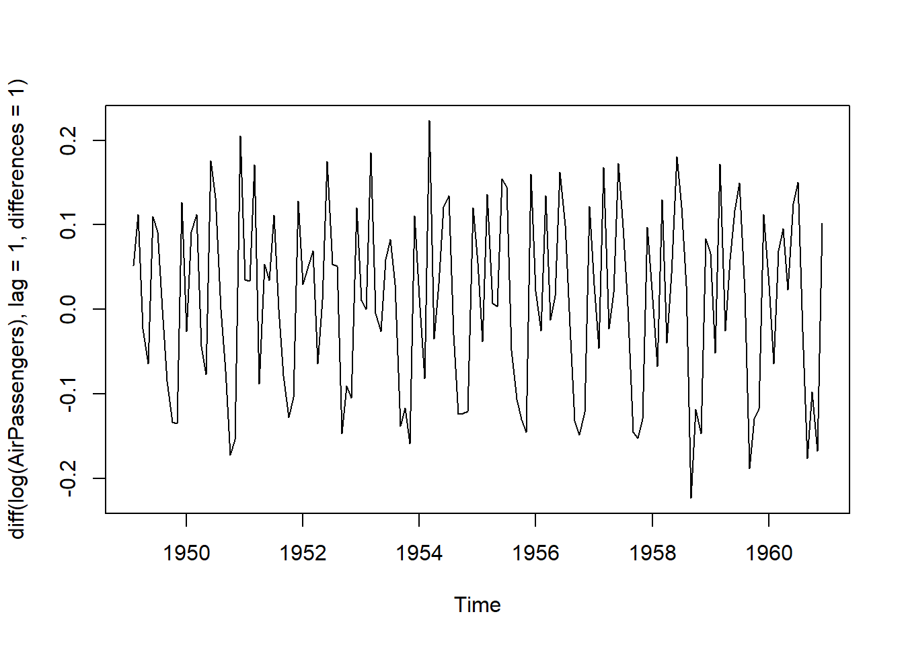
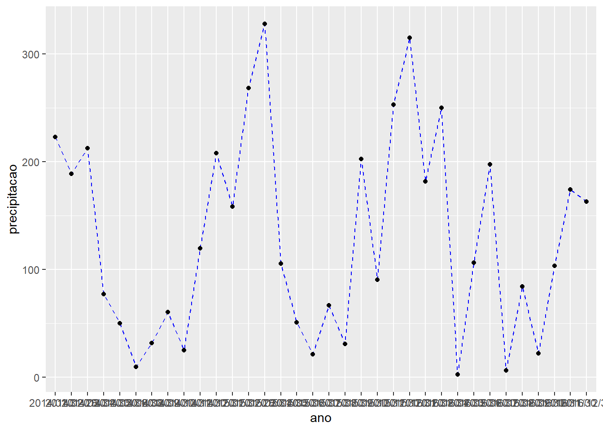

Aplicação
3.3.1 INMET
Para a aplicação, será utilizada a base de dados do Instituto Nacional de Meteorologia (INMET) de precipitação e de dias de precipitação do Mirante de Santana em São Paulo.
Realizaremos a análise exploratória da precipitação total ao longo dos anos (1990-2022).
Para importar a base de dados em .csv, utiliza-se a função read.csv2() e insere-se como argumento o diretório:
library(readr)
#Importar base de dados
inmet0 <- read.csv2("Data/INMET_SP.csv", header = TRUE, sep = ";", dec = ",")É importante lembrar que read.csv() é utilizado quando os valores são separados por vírgula e decimais por ponto; e, read.csv2(), quando são separados por ponto e vírgula e os decimais por vírgula.
Para visualizar a tabela importada, basta executar a função View():
#Visualização da base de dados
View(inmet0)
# Omitir valores NA da base de dados
inmet <- na.omit(inmet0)Para iniciar a exploração dos dados, inicialmente será utilizada a função str() que exibe de forma compacta a estrutura da tabela importada.
str(inmet)## 'data.frame': 190 obs. of 3 variables:
## $ Data.Medicao : chr "31/08/2006" "30/09/2006" "31/10/2006" "30/11/2006" ...
## $ NUMERO.DE.DIAS.COM.PRECIP..PLUV..MENSAL..AUT..número.: int 4 7 15 17 21 19 13 13 12 11 ...
## $ PRECIPITACAO.TOTAL..MENSAL..AUT..mm. : num 6.4 71.2 95.8 219.4 290.4 ...
## - attr(*, "na.action")= 'omit' Named int [1:5] 1 29 97 116 131
## ..- attr(*, "names")= chr [1:5] "1" "29" "97" "116" ...Continuando, será utilizada a função ´summary()´ para apresentar o sumário de estatísticas descritivas (média, mediana, mínimo, máximo, 1º quartil, 3º quartil e valores faltantes (NA)), já que as variáveis de precipitação total e número de dias de precipitação são numéricas.
summary(inmet)## Data.Medicao NUMERO.DE.DIAS.COM.PRECIP..PLUV..MENSAL..AUT..número.
## Length:190 Min. : 0.00
## Class :character 1st Qu.: 8.00
## Mode :character Median :12.00
## Mean :12.44
## 3rd Qu.:16.00
## Max. :28.00
## PRECIPITACAO.TOTAL..MENSAL..AUT..mm.
## Min. : 0.0
## 1st Qu.: 50.8
## Median :108.7
## Mean :132.3
## 3rd Qu.:188.4
## Max. :493.8Inicialmente, os cabeçalhos da coluna serão modificados para facilitar a análise:
#Explorando os cabeçalhos da base de dados
names(inmet)## [1] "Data.Medicao"
## [2] "NUMERO.DE.DIAS.COM.PRECIP..PLUV..MENSAL..AUT..número."
## [3] "PRECIPITACAO.TOTAL..MENSAL..AUT..mm."# Modificando os cabeçalhos
colnames(inmet)[c(1,2,3)] <- c("data","dias_de_precipitacao","precipitacao_total")
View(inmet)Para continuar explorando os dados, realizou-se um gráfico de linhas a fim de analisar o comportamento da precipitação em relação às datas.
month_year <- format(as.Date(inmet$data, format = "%d/%m/%Y"),"%Y/%m")
View(month_year)
library(ggplot2)
ggplot(inmet,
aes(x = month_year, y = precipitacao_total)) +
geom_line(linetype="dashed", color="blue", aes(group=1)) +
geom_point() +
scale_x_discrete(guide = guide_axis(check.overlap = TRUE)) +
scale_y_discrete(guide= guide_axis(check.overlap = TRUE))
No momento, nos interessa analisar a precipitação ao longo dos anos de análise. Por isso, essa variável será adicionada como uma coluna ao dataset inicial:
ano <- format(as.Date(inmet$data, format = "%d/ %m/ %Y"),"%Y")
inmet_new <- cbind(inmet, ano)
View(inmet_new)Analisando o histograma da precipitação total, verifica-se que a sua distribuição é positiva e assimétrica:
# Histograma
library(ggplot2)
ggplot(data=inmet_new, aes(x=precipitacao_total)) +
geom_histogram() +
theme_bw() 
A partir do boxplot abaixo, é possível visualizar que 75% dos valores de precipitação estão entre 50mm e aproximadamente 200mm; a média stá próxima de 150mm e a mediana de 100mm; e, por fim, o valor máximo está próximo de 400 mm. Existem observações além do limite máximo, o que é um indício de outliers, ou seja, observações atípicas (fora do normal).
ggplot(data=inmet_new, aes(y=precipitacao_total)) +
geom_boxplot() +
theme_minimal() Primeiramente, será encontrada a média de precipitação por ano analisado, com um intervalo de confiança de 95% (escore-x da curva normal igual a 1,96). Com o objetivo de deixar o código mais organizado, será utilizado o operador pipe.
Primeiramente, será encontrada a média de precipitação por ano analisado, com um intervalo de confiança de 95% (escore-x da curva normal igual a 1,96). Com o objetivo de deixar o código mais organizado, será utilizado o operador pipe.
#Média das precipitações por ano
#instalando o pacote para utilizar o operador pipe %>%
library(dplyr)
# Criando tabela de statísticas
tabela_stats <- inmet_new %>%
group_by(ano) %>%
summarise(n_obs = n(), media = mean(precipitacao_total), desvio_padrao = sd(precipitacao_total)) %>%
mutate(erro = 1.96*desvio_padrao/sqrt(n_obs),
limite_superior = media + erro,
limite_inferior = media - erro)
#Visualizando a tabela criada com os dados estatísticos
View(tabela_stats)Com o objetivo de analisar a graficamente os valores de precipitação por ano, será utilizado um gráfico de barras com os erros padrões das amostras. Utiliza-se o erro padrão e não o desvio padrão porque, neste caso, estamos interessados na variabilidade das médias das amostras e não na variabilidade das observações dentro da amostra.
#Plotando os valores com seus respectivos erros
ggplot (data = tabela_stats, aes(x = ano, y = media, fill = ano)) +
geom_col() +
geom_errorbar(aes(ymin=limite_inferior, ymax=limite_superior)) +
ggtitle("Média das precipitações por ano") +
xlab("") +
ylab("") +
theme_bw() +
theme(legend.position = "none")